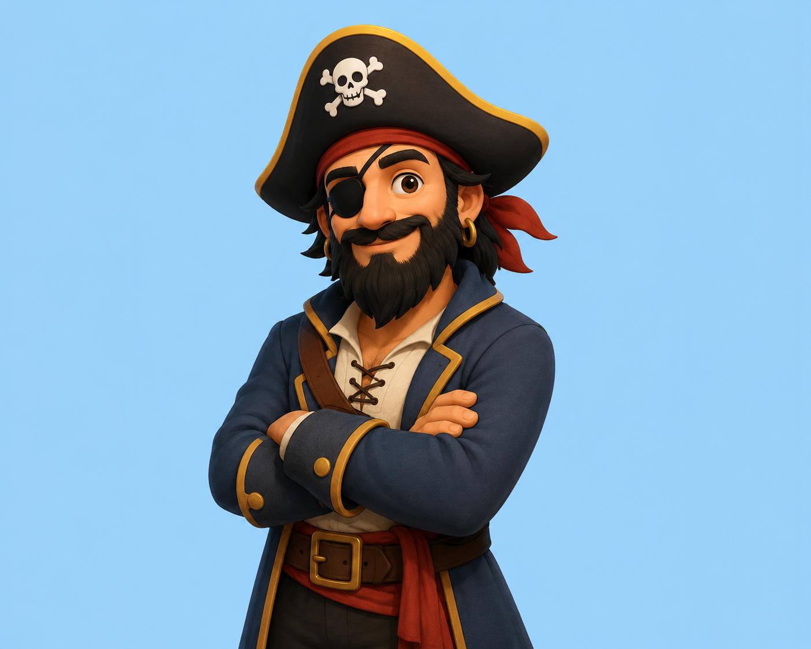

English
Español
Français
Deutsch
Italiano
Português
日本語
한국어
💬 Feedback
📩 Contact Me
Feedback
Submit
Close
🏴☠️
Captain Clue

Think of a YouTuber and I will guess it!
Start Game
Loading...
Yes
No
Don't Know
Probably
Probably Not
⬅️ Go Back
⏭️ Skip
🔄 Restart
Guessing...
Yes
No
Continue?
Yes
No
🏆 You Win!
Who were you thinking of?
Save